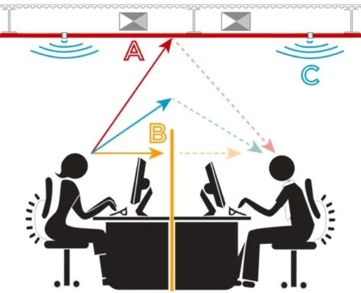
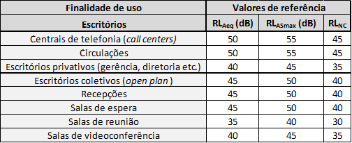

Acústica em escritórios


Os projetos acústicos realizados a fim de solucionar de problemas de ruído em escritórios tomam como ponto de partida a faixa de frequências de operação dentro do local, que é a da voz humana típica (entre 250 - 2 kHz). O conhecimento dessa faixa de operação é determinante para a escolha dos absorvedores que possivelmente serão selecionados para controle sonoro no local.
Assim como em outros projetos, trabalhos de acústica em escritórios são, ou pelo menos devem ser, referenciados em normas técnicas. Portanto, para a determinação de um bom projeto acústico em escritório, é importante que o projetista não estabeleça diretrizes baseadas na sua intuição, mas sim, considerando o tipo de ambiente, os problemas identificados e quais recomendações são padronizadas ou cabíveis para as particularidades do caso avaliado.
Normas
ISO 9921 - Ergonomia em escritórios
Na avaliação de condicionamento acústico de escritórios, qualifica-se a comunicação falada a fim de se promover mensagens compreensivas em diferentes aplicações. Essa qualificação é estabelecida a partir de recomendações da Norma ISO 9921, específica para Ergonomia em escritórios. Em seu escopo, são estabelecidos critérios de avaliação de comunicação falada. O parâmetro tomado de base para a qualificação da comunicação é o STI (Speech Transmission Index). Quanto maior o valor desse parâmetro, mais compreensível é o retorno do ambiente à fala pronunciada dentro do local. Muitas vezes, em um ambiente de escritório, a transmissão da fala pode ser indesejável para a situação avaliada. Por exemplo, a ocorrência de uma conversa paralela que está sendo compreendida pode causar desconcentração em um funcionário, prejudicando, assim sua produtividade no trabalho. Nesse caso, é desejado um STI baixo. Segundo a ISO 9921, o STI assume que uma boa inteligibilidade de um sinal de fala transmitido está relacionada com a preservação das diferenças espectrais entre os sons da fala, o que pré-assume uma boa relação sinal-ruído (SNR) dentro desse local. Nesse contexto, é desejável reduzir a relação sinal-ruído, logo, o STI também. Assim, são propostas pela Norma, algumas diretrizes de projeto para este fim. Algumas medidas são a aplicação de:

ISO 3382-3 - Distração e privacidade em escritórios integrados
Para o caso de escritórios integrados, a Norma que estabelece as grandezas de mensuração para avaliação de grandezas que estimam relações de distração e privacidade em situações de trabalho é a ISO 3382 - Parte III. Conforme essa Norma, certas grandezas estabelecem essas relações. São elas:
- Distância de distração;
- Taxa de decaimento espacial de nível de pressão sonora ponderado em A (NPS(A)) da fala;
- Nível de pressão sonora ponderado em A, à 4m de distância do emissor;
- Distância de privacidade;
- STI (Cujo valor aumenta proporcionalmente à compreensão das falas): Tomado como parâmetro para avaliar as distâncias de distração e privacidade.
Os valores de STI variam de 0 até 1 (ou de 0% até 100%). De acordo com a ISO 3382-3, quando:
Segundo a ISO 3382-3, o levantamento de medições para avaliação acústica do STI (de inteligibilidade da fala) em escritórios integrados é feito pela coleta do nível de pressão sonora residual do ambiente, ou seja, o nível medido na estação de trabalho durante o horário de trabalho com as pessoas ausentes.
NBR 10.152 - Níveis de pressão sonora em ambientes internos a edificações
Na avaliação de isolamento acústico de escritórios, o dimensionamento de projetos é amparado na norma NBR 10.152, que estabelece os níveis de pressão sonora recomendados em ambientes internos às edificações. Assim, a avaliação sonora de um ambiente interno de uma edificação é realizada pela comparação de seus níveis de pressão sonora representativos com os respectivos valores de referência para ambientes internos de uma edificação, de acordo com suas finalidades de uso. Esses valores de referência são importantes para o dimensionamento atribuído ao projeto, uma vez que é o valor tomado como meta para o caso particular do projeto avaliado. A tabela abaixo apresenta valores de referência recomendado pela NBR 10.152 para diferentes áreas presentes em escritórios.

Projetos em escritórios integrados
Devido ao fato de não haverem separações através de paredes em escritórios integrados, para que se alcance o conforto acústico desejado, é necessário recorrer a algumas estratégias no planejamento do projeto acústico desses ambientes. Estudos de engenharia acústica revelam que a privacidade em ambientes de trabalho integrados pode ser atingida apenas quando todos os componentes críticos são presentes e propriamente implementados. Alguns deles são:
- Arranjo cuidadoso de mobílias e ocupantes, incluindo orientação dos palestrantes e ouvintes;
- Barreiras parciais: tipo, tamanho e localização corretos;
- Teto e paredes com painéis altamente absorvedores;
- Mascaramento sonoro com conteúdo e nível espectral adequado.
Um parâmetro muito importante para criterizar as existentes relações de distração e privacidade (Abordadas na ISO 3382-3) é o SNR (Signal to noise ratio), em português, traduzido como relação sinal-ruído. De modo geral, se um som emitido se destaca em relação ao som residual do ambiente, o SNR é alto. Se não houver destaque em um pronunciamento de voz no ambiente, o SNR é baixo. Assim, a obtenção desse parâmetro ajuda a mensurar a inteligibilidade (Cuja grandeza é o STI), e por consequência, o grau de privacidade em um escritório integrado.

As relações ilustradas na tabela acima auxiliam em nosso entendimento das medidas recomendadas para maior privacidade em ambientes de escritórios integrados. O uso estratégico de absorvedores auxilia na redução da energia sonora emitida por uma conversa até o receptor. O uso de barreiras evita a transmissão do som direto de um ponto a outro. O mascaramento sonoro, feito através do acréscimo de um som ambiente, como o nome já diz, ajuda a mascarar uma eventual conversa indesejável no escritório.